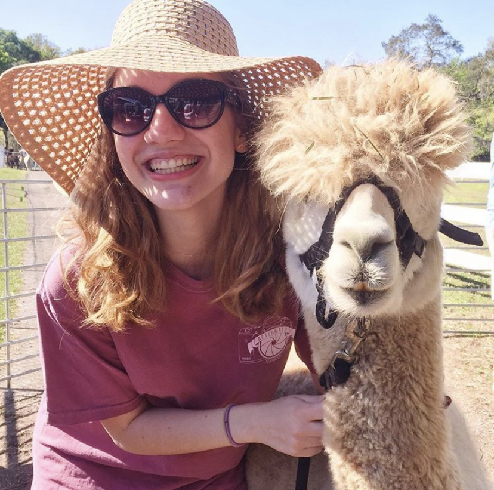

Golden Spirite Alpaca Ranch

Jacksonville, FL: Cummer Museum of Art and Gardens
Dr. Melissa Dvorsky's research and clinical expertise is assessment and intervention with children, adolescents, and young adults with Attention-Deficit/Hyperactivity Disorder (ADHD) and learning differences. Her research focuses on improving the effectiveness and sustainability of treatment for ADHD by: (a) identifying and targeting risk and protective mechanisms, and (b) leveraging technology to personalize, disseminate, and sustain treatments. She has authored or co-authored over 40 peer-reviewed papers, 8 book chapters, and numerous conference presentations. Dr. Dvorsky completed a NIMH-T32 fellowship at University of California San Francisco, residency/internship at Cincinnati Children's Hospital Medical Center at the Center for ADHD, and graduate training at Virginia Commonwealth University. She was recently awarded a K23 from NIMH to develop and pilot ATOM (Advanced Tools for Organization Management), a technology-enhanced behavioral skills intervention for adolescents with ADHD to implemented in local middle schools in DC, VA, and MD.
John Barber was recently hired in July as a Senior Staff Biostatistician in the CTR Division of Biostatistics and Study Methodology at CNMC. His multi-disciplinary work focuses on advising, designing, and performing statistical analyses applied to various medical, biological, and epidemiological outcomes. In addition to his statistical roles he also serves the CTSI-CN as the Biostatistics Epidemiology and Research Design (BERD) Program Lead. He has previously held roles as both a Biostatistician and a Sr. Biostatistician in the Department of Epidemiology at the Johns Hopkins Bloomberg School of Public Health (2014-2020) and as a Biostatistician Associate at a pre-clinical contract research organization MPI Inc. (2013-2014). He received both his M.S. in Biostatistics and his B.S. in Biomedical Sciences/Minor Spanish from Grand Valley State University, near Grand Rapids, MI.
Hello! My name is Breana, one of the newest Clinical Research Assistants on the Diabetes Behavioral Research Team. I was born and raised in Clearwater, Florida and graduated from the University of North Florida in Summer 2020, majoring in Psychology. Two weeks after graduating, I boarded a plane headed to DC and never looked back! My goal is to become a pediatric psychologist and my research interests include coping with chronic illness, health disparities, and doctor-patient interactions.
Picture: Sweetfields Farm in Florida. "Sunflowers are one of my favorite flowers and I make sure to visit the farm every summer to see their massive sunflower gardens" - Breana
Golden Spirite Alpaca Ranch
Jacksonville, FL: Cummer Museum of Art and Gardens
Hailey Moore recently joined the Diabetes Behavioral Researh Team with Dr. Randi Streisand and Dr. Maureen Monaghan.

Acroplis, Greece: I was lucky enough to be able to explore with my family.
London: I was able to visit my friends who studied abroad in London in December of 2019 and experience the winter holidays!
Created with Mobirise site template